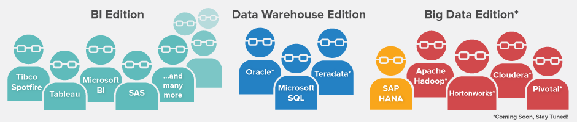

Home
The PI SYSTEM
ABOUT
CONTACT
The PI System and PI Integrator for BI bring together time-series data access and tools for standardization, presenting a single version of the truth for your operational data.
PLACE HOLDER FOR TILES
Pi System page content
Contact page content